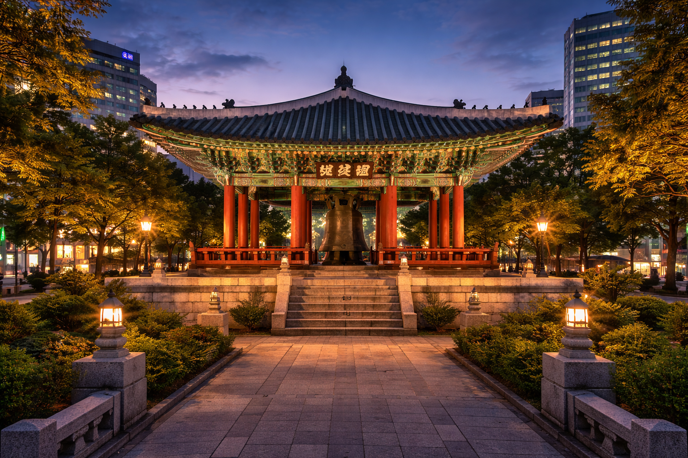
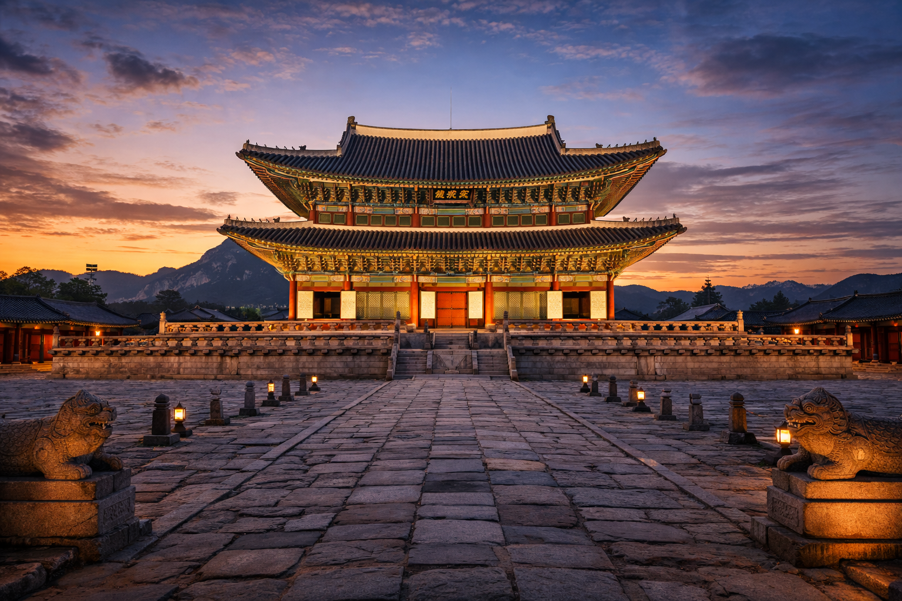

Korea, Right Now
지금 대한민국의 문화와 트렌드를 소개합니다.


Treasures of Korea
대한민국를 대표하는 소중한 문화유산을 소개합니다.
흥인지문
흥인지문은 조선시대 한양 도성의 동쪽 대문으로 동대문이라고도 불립니다. 조선 태조 때 처음 세워졌으며 서울을 대표하는 문화유산 중 하나입니다. 현재는 서울의 상징적인 역사 유적지로 많은 관광객이 방문합니다.

보신각보신각
보신각은 조선시대에 시간을 알리기 위해 종을 치던 장소입니다. 매일 새벽과 저녁에 종을 울려 도성의 문을 열고 닫는 시간을 알렸습니다. 현재는 서울 종로에 위치한 역사적인 문화유산입니다. 매년 새해가 되면 보신각에서 제야의 종 행사가 열립니다.

경복궁경복궁
경복궁은 조선 왕조의 법궁으로 1395년에 건립되었습니다. 조선의 궁궐 가운데 가장 규모가 크고 중심이 되는 궁궐입니다. 근정전과 경회루 등 아름다운 전각이 남아 있습니다. 현재는 한국을 대표하는 역사 관광지입니다.
훈민정음
훈민정음
훈민정음은 세종대왕이 백성을 위해 만든 문자 체계입니다. 1443년에 창제되고 1446년에 반포되었습니다. 한글의 창제 원리와 사용 방법이 기록된 책입니다. 현재 유네스코 세계기록유산으로 등재되어 있습니다.
마을에서 만나는 진짜 제주
13개 마을 이야기